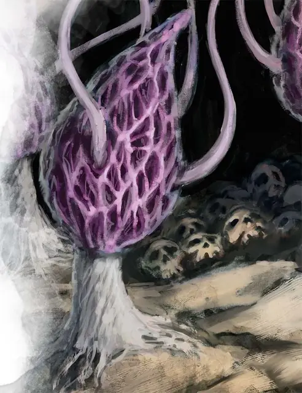

Фиолетовый сморчок
Violet Fungus
Среднее Растение, без мировоззрения

Класс Защиты 5 Инициатива −5 (5)
Хиты 18 (4к8)
Скорость 5 футов
| мод | спас | ||
|---|---|---|---|
| СИЛ | 3 | −4 | −4 |
| ЛОВ | 1 | −5 | −5 |
| ТЕЛ | 10 | +0 | +0 |
| мод | спас | ||
|---|---|---|---|
| ИНТ | 1 | −5 | −5 |
| МДР | 3 | −4 | −4 |
| ХАР | 1 | −5 | −5 |
Иммунитеты Испуганный, Оглохший, Ослеплённый, Очарованный
Чувства пассивное Восприятие 6, Слепое зрение 30 футов
Языки нет
Опасность 1/4 (50 опыта; БВ +2)
Действия
Мультиатака. Сморчок совершает две атаки Разлагающим касанием.
Разлагающее касание. Бросок рукопашной атаки: +2, досягаемость 10 фт. Попадание: 4 (1к8) Некротического урона.
Бонус мастерства +2
Среда обитания Подземье
Сокровища Отсутствуют
Грибы
Смертоносные споры и хищные полипы
Сырое и лишённое солнца Подземье — идеальное место для размножения странных и опасных грибов.
Фиолетовые сморчки — медленные, но способные передвигаться грибы, разлагающие любую плоть, к которой прикасаются своими извивающимися усиками.